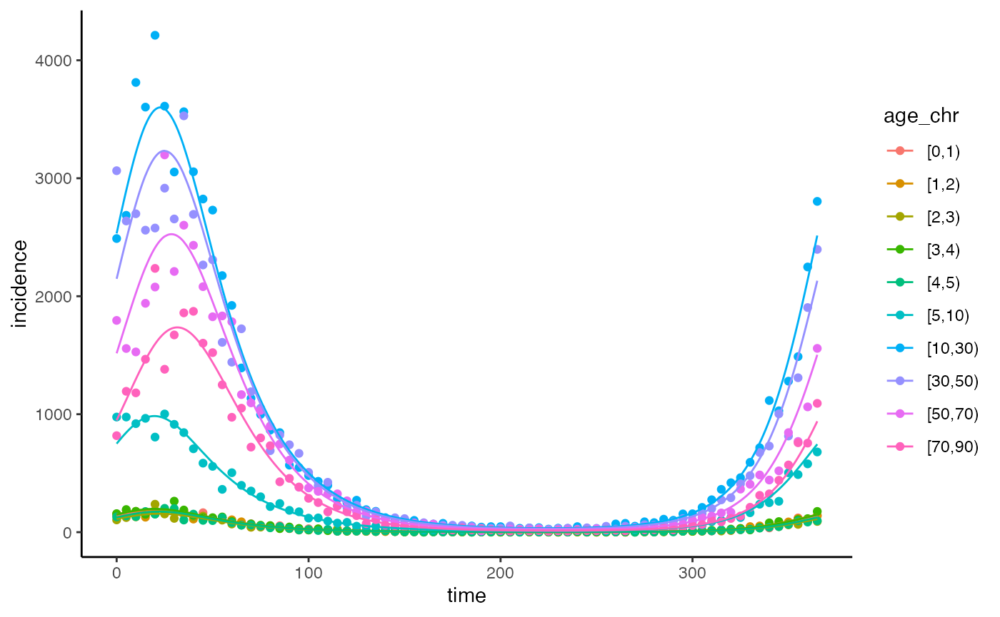

In this vignette we will show how to calibrate the model to age-specific incidence data. To calibrate the model we vary the b0 (transmission rate coefficient), b1 (amplitude of seasonal forcing) and phi (phase shift of seasonality) parameters.
We begin by simulating some data using the R/run_model.R function, to do so, we arbitrarily select a b0 value of 0.15, b1 value of 0.25 and phi value of 10 days. We then add noise to this count data by drawing random samples from a negative binomial distribution with greater variance than the poisson distribution and a mean equivalent to the simulated incidence values.
# getting the model parameters
age.limits <- c(seq(0, 5, 1), seq(10, 70, 20))
contact_population_list <- create_contact_matrix(country = "United Kingdom", age.limits = age.limits)
#> Warning in pop_age(survey.pop, part.age.group.present, ...): Not all age groups represented in population data (5-year age band).
#> Linearly estimating age group sizes from the 5-year bands.
parameters <- get_parameters(overrides = list("b0" = 0.15,
"b1" = 0.25,
"phi" = 10),
contact_population_list = contact_population_list)
# running the model
model_simulation <- run_model(parameters = parameters,
warm_up = 365 * 9,
max_t = 365 * 10)
# adding noise to the incidence values and selecting samples every 5 days
set.seed(123)
df <- data.frame(time = model_simulation$time,
incidence = as.integer(rnbinom(n = nrow(model_simulation), mu = model_simulation$Incidence, size = 50)),
age_chr = model_simulation$age_chr) |>
subset(time %% 5 == 0)The R/get_calibration_parameters.R function can be used to obtain the age groupings, times and parameter values required for each dataset of age-specific incidence data within a list of data frames. Each data frame must contain a time (numeric), incidence (integer) and age_chr (character) columns. age_chr is the age grouping. Assuming incidence is Poisson distributed the R/calibration_likelihood.R function can be used to calculate the log-likelihood; the minimise argument specifies whether this value should be multiplied by -1, so that the maximum likelihood can be estimated using an optimisation algorithm that minimises this value. In the R/constrained_max_likelihood.R we use the nmlinb function https://github.com/SurajGupta/r-source/blob/master/src/library/stats/R/nlminb.R to estimate the parameters that give the maximum likelihood.
data <- list("sim" = df)
fixed_parameter_list <- get_calibration_parameters(data = data,
data_populations = rep(parameters$total_population, length(data)),
warm_up = 365 * 9)
#> Warning in create_contact_matrix(country = country, age.limits = age.limits):
#> polymod age groupings only go up to 75. Age limits above this have therefore
#> been omitted.
#> Warning in pop_age(survey.pop, part.age.group.present, ...): Not all age groups represented in population data (5-year age band).
#> Linearly estimating age group sizes from the 5-year bands.
calibration_likelihood(fitted_parameters = c("b0" = 0.15, "b1" = 0.25, "phi" = 10),
fixed_parameter_list = fixed_parameter_list,
minimise = FALSE,
data = data,
cohort_step_size = 10,
dt = 0.25) |> print()
#> [1] -4601.531
fitted_values <- constrained_max_likelihood(fixed_parameter_list = fixed_parameter_list,
data = data,
scale_parameters = list(lower = c(0.01, 0, 0), upper = c(10, 1, 365.25)),
cohort_step_size = 10,
dt = 0.25)
#> 0: 357043.42: 0.250000 0.250000 0.250000
#> 1: 354149.03: 0.214626 0.225355 0.245967
#> 2: 343990.30: 0.139042 0.183648 0.239063
#> 3: 338092.57: 0.113180 0.174826 0.237410
#> 4: 314756.45: 0.0606985 0.159560 0.234226
#> 5: 297992.40: 0.0419267 0.155345 0.232960
#> 6: 293127.73: 0.0381650 0.154569 0.232616
#> 7: 233563.99: 0.00795724 0.148978 0.229805
#> 8: 131664.73: 0.0108954 0.148993 0.229784
#> 9: 109396.62: 0.0104682 0.232358 0.215407
#> 10: 106217.51: 0.0108181 0.232355 0.215392
#> 11: 105889.94: 0.0107493 0.232691 0.215321
#> 12: 105664.53: 0.0107072 0.233343 0.215068
#> 13: 99784.412: 0.0111125 0.272900 0.208490
#> 14: 99674.437: 0.0110784 0.272886 0.208344
#> 15: 99565.585: 0.0111120 0.272740 0.208336
#> 16: 99441.782: 0.0110753 0.272473 0.208204
#> 17: 99281.201: 0.0111053 0.271872 0.208199
#> 18: 99066.125: 0.0110610 0.270675 0.208085
#> 19: 98735.788: 0.0110777 0.268270 0.208096
#> 20: 97660.080: 0.0109189 0.255159 0.207999
#> 21: 58397.522: 0.0122062 0.445901 0.120632
#> 22: 22053.160: 0.0131742 0.497352 0.0871415
#> 23: 18451.082: 0.0130398 0.477196 0.100175
#> 24: 17126.827: 0.0129595 0.477196 0.100174
#> 25: 16597.040: 0.0128792 0.477196 0.100173
#> 26: 10944.782: 0.0122371 0.344413 0.105859
#> 27: 10889.019: 0.0121887 0.344413 0.105853
#> 28: 10882.198: 0.0121981 0.344377 0.105823
#> 29: 9345.3904: 0.0122093 0.326011 0.0954586
#> 30: 9169.6027: 0.0123442 0.326012 0.0954549
#> 31: 6043.8855: 0.0137288 0.215227 0.0337240
#> 32: 4580.5300: 0.0137325 0.245264 0.0333271
#> 33: 4498.0190: 0.0137823 0.247164 0.0343817
#> 34: 4495.3706: 0.0137959 0.248154 0.0345010
#> 35: 4495.3205: 0.0137931 0.248330 0.0346390
#> 36: 4495.3091: 0.0137906 0.248447 0.0347490
#> 37: 4495.3091: 0.0137906 0.248447 0.0347496
#> 38: 4495.3091: 0.0137906 0.248447 0.0347495We can then use these fitted parameter values to simulate transmission.
parameters_fit <- get_parameters(overrides = list("b0" = fitted_values$par[1],
"b1" = fitted_values$par[2],
"phi" = fitted_values$par[3]),
contact_population_list = contact_population_list)
model_simulation_fit <- run_model(parameters_fit,
warm_up = 365 * 9,
max_t = 365 * 10)
# visualising the simulated data and fitted model
ggplot(data = df |>
dplyr::mutate(age_chr =
factor(df$age_chr,
levels = c("[0,1)", "[1,2)", "[2,3)", "[3,4)", "[4,5)", "[5,10)", "[10,30)", "[30,50)", "[50,70)", "[70,90)"))),
aes(x = time, y = incidence, col = age_chr)) +
geom_point() +
theme_classic() +
geom_line(data = model_simulation_fit, inherit.aes = FALSE,
aes(x = time, y = Incidence, group = age_chr, col = age_chr)
)